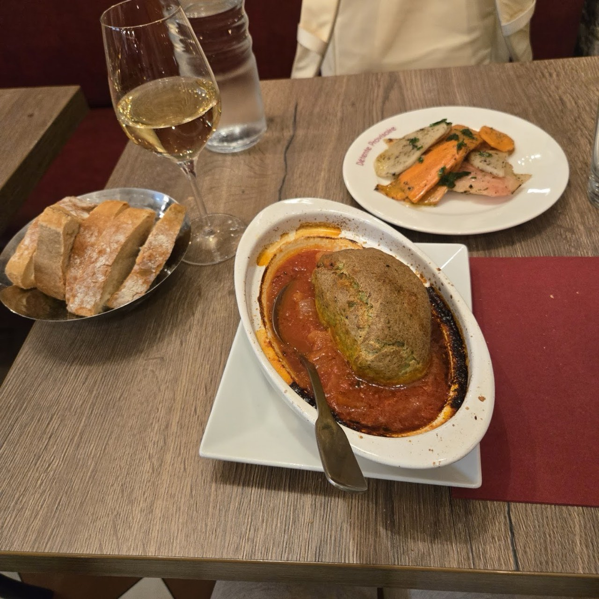
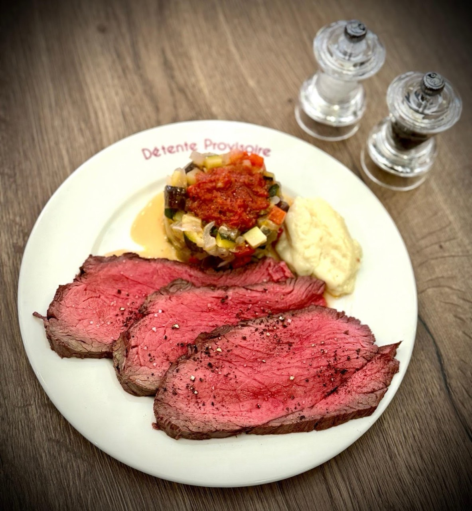
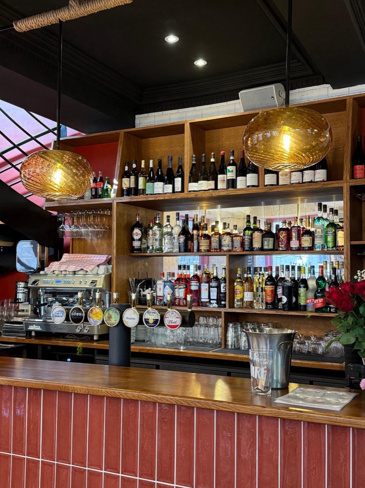
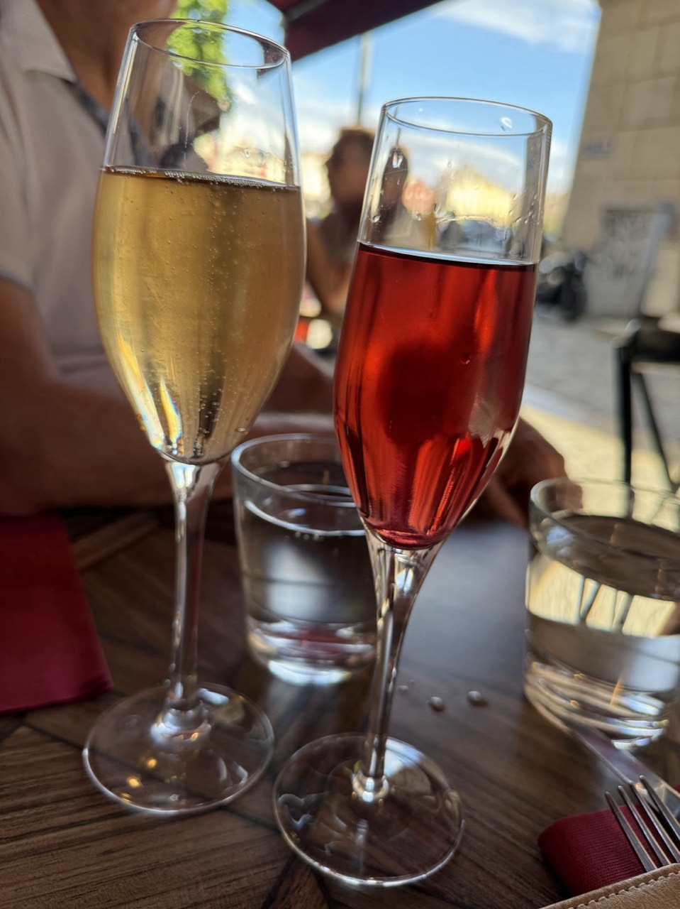
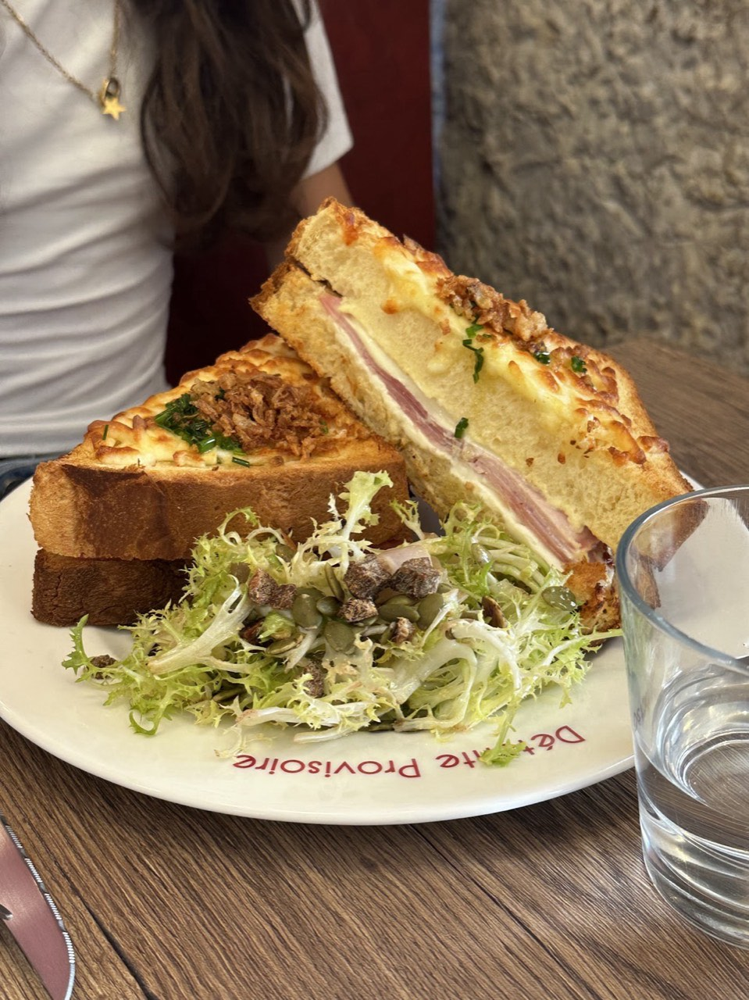
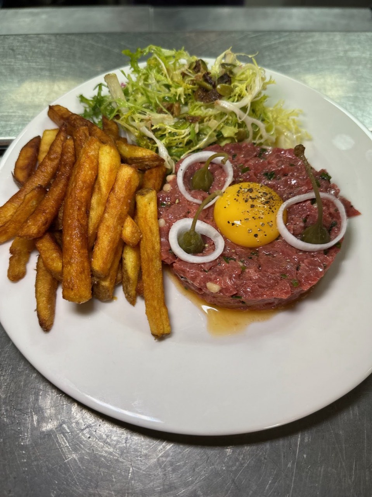
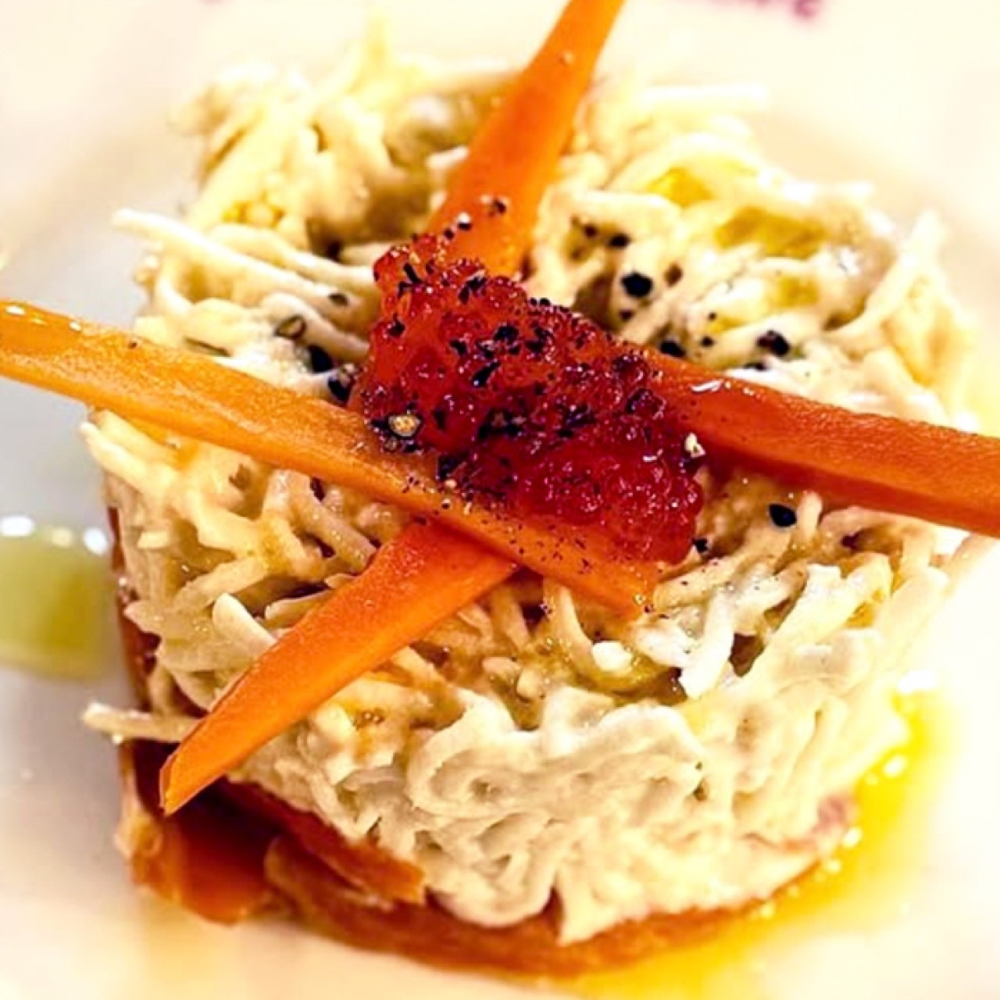
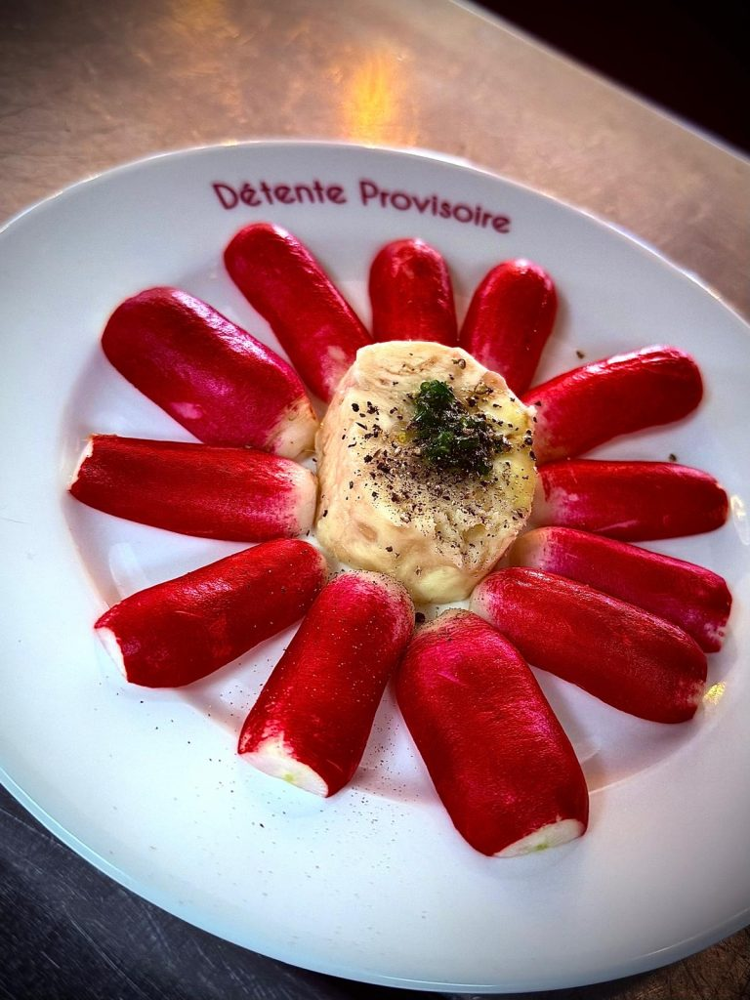

Brasserie · Lyon 5e
Les Évadés
Située à côté du palais de justice et à deux pas de la Presqu’île, L es Evadés est la brasserie de quartier idéale pour s’échapper du quotidien . Avec sa terrasse ensoleillée d’environ 40 places , l’adresse qui a ouvert ses portes le 9 avril dernier , séduit par son authenticité et son engagement . Ici , pas de carte à rallonge , mais une sélection resserrée de plats faits maison , élaborés à partir de produits de saison et locaux .
Chaque assiette raconte une histoire de terroir et de goût . Le nom du lieu résonne comme une invitation à la détente : on s’évade entre amis, en famille ou en solo , le temps d’un déjeuner généreux ou d’un verre de vin bio soigneusement choisi .
- Cuisine française
- Terrasse
- 4,9 ★ sur Google (697 avis)

En images







Nous trouver
4 Rue du Palais de Justice, 69005 Lyon
| Mer-Lun | 10:00-22:00 |